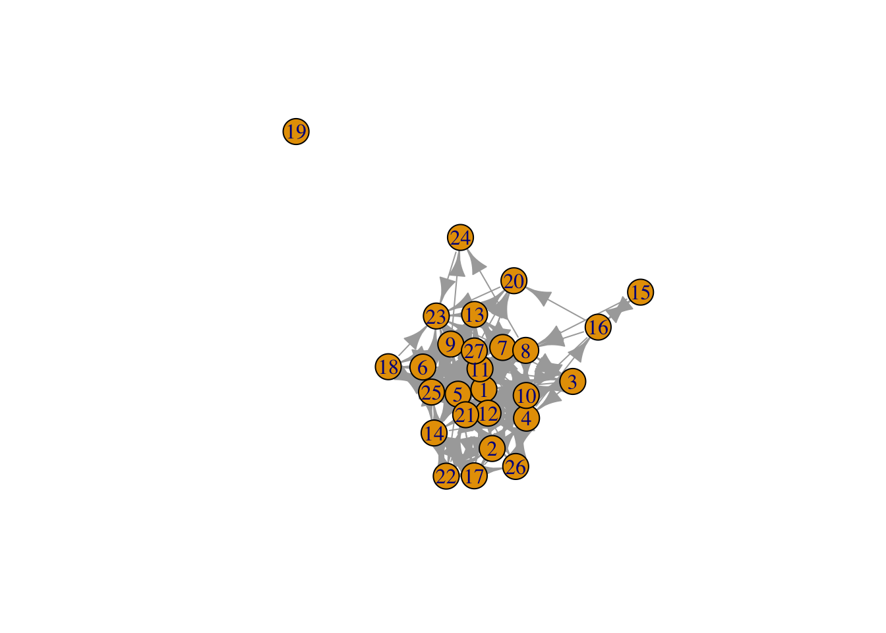
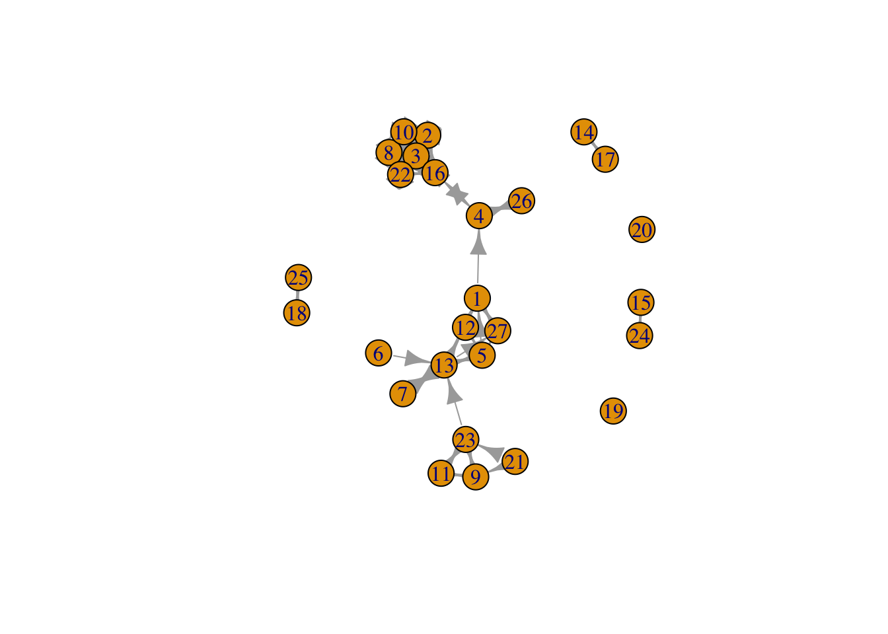
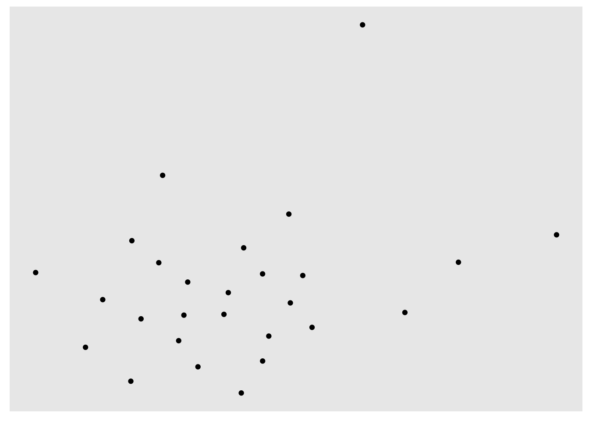
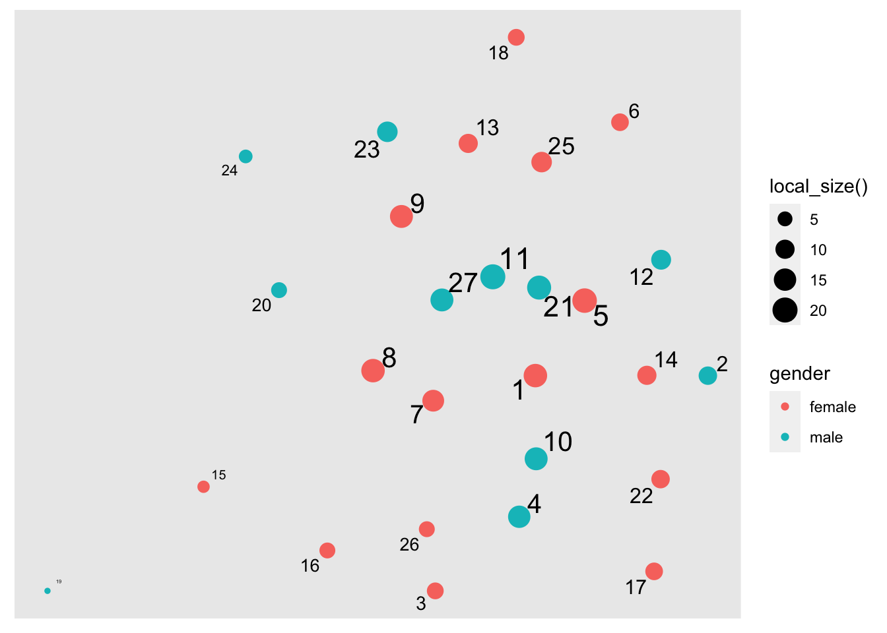
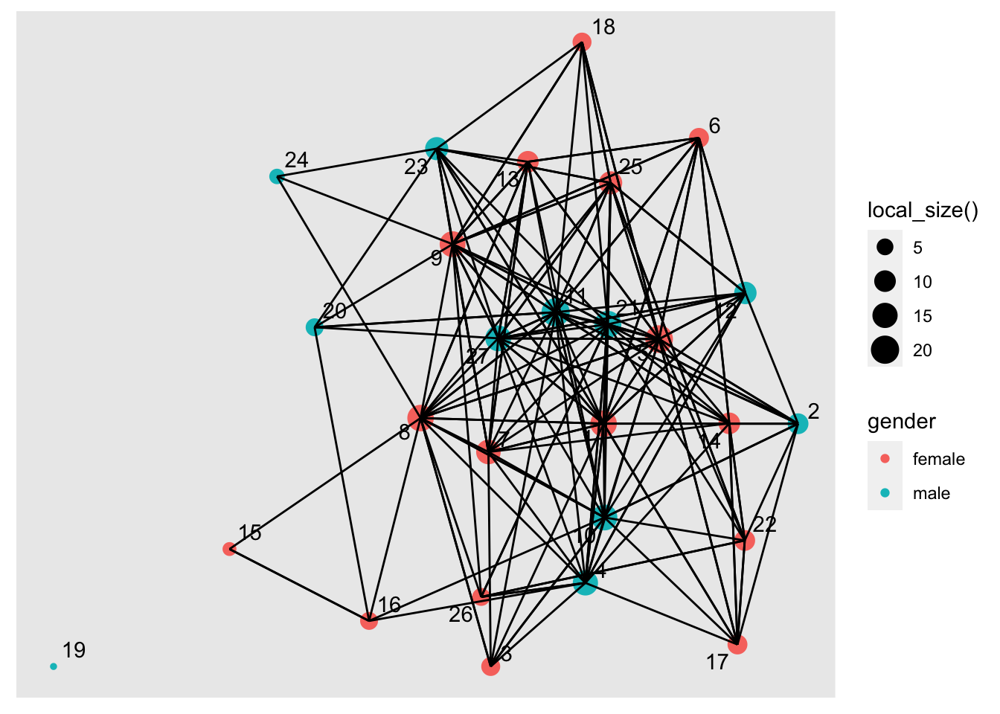
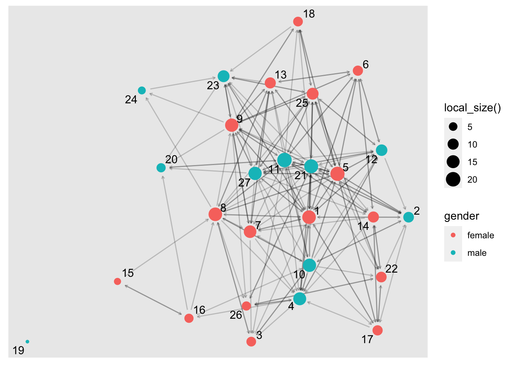
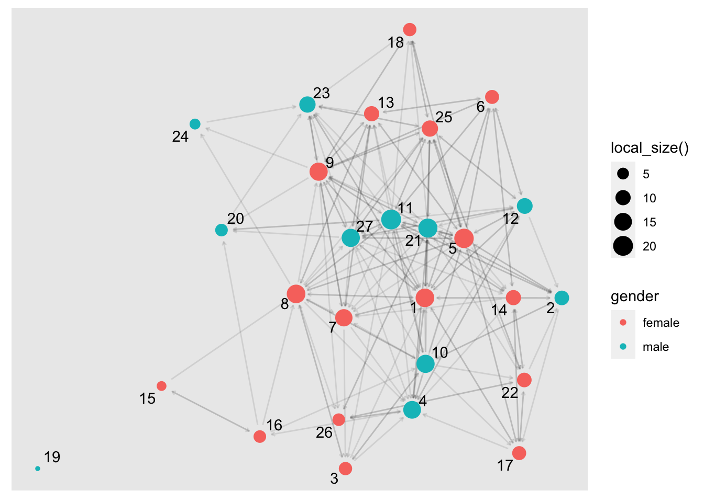
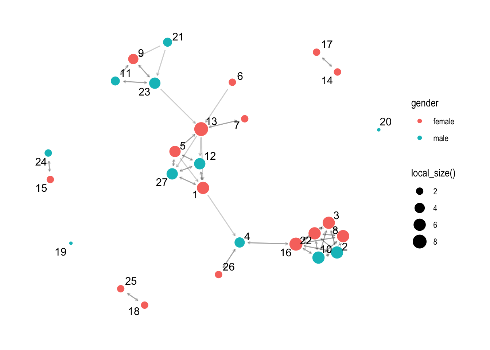

library(tidyverse)Who’s Friends with Who in Middle School
ECI 589 SNA and Education: Unit 1 Case Study
1. PREPARE
Our first SNA case study is guided by the work of Matthew Pittinsky and Brian V. Carolan (2008), which employed a social network perspective to examine teachers’ perceptions of student friendships agreed with their own. Sadly, this excellent study did not include any visual depictions comparing student and teacher perceived friendship networks, but we are going to fix that!
Our primary aim for this case study is to gain some hands-on experience with essential R packages and functions for SNA. We learn how to preparing network data for analysis and creating a simple network sociogram to help describe visually what our network “looks like.” Specifically, this case study will cover the following topics pertaining to each data-intensive workflow process (Krumm, Means, and Bienkowski 2018):
Prepare: Prior to analysis, we’ll look at the context from which our data came, formulate some research questions, and get introduced the {tidygraph} and {ggraph} packages for analyzing and visualizing relational data.
Wrangle: In the wrangling section of our case study, we will learn some basic techniques for manipulating, cleaning, transforming, and merging network data.
Explore: With our network data tidied, we learn to calculate some key network measures and to illustrate some of these stats through network visualization.
Model: We conclude our analysis by introducing community detection algorithms for identifying groups and revisiting sentiment about the common core.
Communicate: We develop a polished sociogram to highlight key findings.
1a. Review the Research
Pittinsky, M., & Carolan, B. V. (2008). Behavioral versus cognitive classroom friendship networks. Social Psychology of Education, 11(2), 133-147.
Abstract
Researchers of social networks commonly distinguish between “behavioral” and “cognitive” social structure. In a school context, for example, a teacher’s perceptions of student friendship ties, not necessarily actual friendship relations, may influence teacher behavior. Revisiting early work in the field of sociometry, this study assesses the level of agreement between teacher perceptions and student reports of within-classroom friendship ties. Using data from one middle school teacher and four classes of students, the study explores new ground by assessing agreement over time and across classroom social contexts, with the teacher-perceiver held constant. While the teacher’s perceptions and students’ reports were statistically similar, 11–29% of possible ties did not match. In particular, students reported significantly more reciprocated friendship ties than the teacher perceived. Interestingly, the observed level of agreement varied across classes and generally increased over time. This study further demonstrates that significant error can be introduced by conflating teacher perceptions and student reports. Findings reinforce the importance of treating behavioral and cognitive classroom friendship networks as distinct, and analyzing social structure data that are carefully aligned with the social process hypothesized.
Research Questions
The central question guiding this investigation was:
Do student reports agree with teacher perceptions when it comes to classroom friendship ties and with what consequences for commonly used social network measures?
We will be using this question to guide our own analysis of the classroom friendships reported by teachers. Specifically, we will use the first part of this question to guide our analysis and develop two sociograms to help visually compare similarities and differences between teacher and student reported classroom friendships.
Data Collection
To measure the level of agreement between student and teacher reports of classroom student friendships, sociometric data were collected from each student in all four classes and the teacher provided similar reports on all students. To collect student reports of friendships, students were given a class roster and asked to describe their relationship with each student in the class. Choices included best friend, friend, know-like, know, know-dislike, strongly dislike, and do not know. In the terminology of network analysis, these sociometric data are “valued” (degrees of friendship, not just yes or no) and “directed” (friendship nominations were not presumed to be reciprocal). Data were collected in the autumn and spring. All “best friend” and “friend” choices are coded as ‘1’ (friend), while all other choices are coded as ‘0’ (not friend). The teacher’s reports of students’ friendships were generated in a similar manner.
Analyses
To assess agreement between perceived friendship by the teacher and students, QAP (quadratic assignment procedure) correlations for each class’s two matrices (teacher and student generated) were analyzed in the autumn and spring. A QAP correlation is used to calculate the degree of association between two sets of relations; it tests whether the probability of dyad overlap in the teacher matrix is correlated with the probability of dyad overlap in the student matrix. It does so by running a large number of simulations. These simulations generate random matrices with sizes and value distributions based on the original two matrices being tested. It then computes an average level of correlation between the matrices that would be expected at random. Similarly, it calculates the probability that the observed degree of correlation between two matrices would be as large or as small as that observed based on the range of correlations generated in the random permutations, with an associated significance statistic.
Key Findings
As reported by Pittinsky and Carolan (2008) in their findings section:
While the teacher’s perceptions and students’ reports were statistically similar, 11–29% of possible ties did not match. In particular, students reported significantly more reciprocated friendship ties than the teacher perceived.
üëâ Your Turn ‚§µ
Based on what you know about networks and the context so far, what other research question(s) might ask we ask in this context that a social network perspective might be able to answer?
In the space below, write your research question:
- YOUR RESPONSE HERE
1c. Load Packages
As highlighted in Chapter 6 of Data Science in Education Using R (DSIEUR), one of the first steps of every workflow should be to set up your “Project” within RStudio. Recall that:
A Project is the home for all of the files, images, reports, and code that are used in any given project
Since we are working from an R project cloned from GitHub, a Project has already been set up for you as indicated by the .Rproj file in your main directory in the Files pane. Instead, we will focus on getting our project set up withe the requisite packages we’ll need for analysis.
Packages, or sometimes called libraries, are shareable collections of R code that can contain functions, data, and/or documentation and extend the functionality of R. You can always check to see which packages have already been installed and loaded into RStudio Cloud by looking at the the Files, Plots, & Packages Pane in the lower right-hand corner.
tidyverse üì¶

One package that we’ll be using extensively is {tidyverse}. Recall from earlier tutorials that the {tidyverse} package is actually a collection of R packages designed for reading, wrangling, and exploring data and which all share an underlying design philosophy, grammar, and data structures. These shared features are sometimes “tidy data principles.”
Click the green arrow in the right corner of the “code chunk” that follows to load the {tidyverse} library as well as the {here} package introduced in previous labs.
Don’t worry if you saw a number of messages: those probably mean that the tidyverse loaded just fine. Any conflicts you may have seen mean that functions in these packages you loaded have the same name as functions in other packages and R will default to function from the last loaded package unless
Next, we will introduce two new packages extend the tidyverse suite of packages and that we will use throughout SNA Learning Labs 1-4.
New Packages
tidygraph üì¶

The {tidygraph} package is a huge package that exports 280 different functions and methods, including access to almost all of the dplyr verbs plus a few more, developed for use with relational data. While network data itself is not tidy, it can be envisioned as two tidy tables, one for node data and one for edge data.
The {tidygraph} package provides a way to switch between the two tables and uses dplyr verbs to manipulate them. Furthermore, it provides access to a lot of graph algorithms with return values that facilitate their use in a tidy workflow.
ggraph üì¶

Created by the same developer as {tidygraph}, {ggraph} – pronounced gg-raph or g-giraffe hence the logo – is an extension of {ggplot} aimed at supporting relational data structures such as networks, graphs, and trees. Both packages are more modern and widely adopted approaches data visualization in R.
While ggraph builds upon the foundation of ggplot and its API, it comes with its own self-contained set of geoms, facets, etc., as well as adding the concept of layouts to the grammar of graphics, i.e. the “gg” in ggplot and ggraph.
readxl üì¶

The {readxl} package makes it easy to get data out of Excel and into R. Compared to many of the existing packages (e.g. gdata, xlsx, xlsReadWrite) readxl has no external dependencies, so it’s easy to install and use on all operating systems. It is designed to work with tabular data.
Since one of our data wrangling steps in the next section is importing network matrices stored in excel files, this package will come in handy.
R Studio Tip: Type ?read_excel into the console and check the arguments section to examine the different arguments that can be used with this function.
üëâ Your Turn ‚§µ
Use the code chunk below load the {tidygraph}, {ggraph}, and {readxl} packages:
# YOUR CODE HERE
library(tidygraph)
library(ggraph)
library(readxl)2. WRANGLE
In general, data wrangling involves some combination of cleaning, reshaping, transforming, and merging data (Wickham and Grolemund 2016). As highlighted in Estrellado et al. (2020), wrangling network data can be even more challenging than other data sources since network data often includes variables about both individuals and their relationships.
For our data wrangling in unit 1, we’re keeping it relatively simple since working with relational data is a bit of a departure from our working with rectangular data frames. Our primary goals for Unit 1 is learning how to:
Import Data from Excel. In this section, we learn about the
read_xlsx()function for importing a data stored in a format in a unique two common formats for storing network data: matrices and nodelists.Make a Tidy Graph. Before we can create our sociogram, we’ll first need to convert our data frames into special data format, an R network
tbl_graphobject, for working with relational data.
2a. Import Data
One of our primary goals for this case study to is create network graph called a sociogram that visually describes what a network “looks like” from the perspective of both students and their teacher. To do so, we’ll need to import two Excel files originally obtained from the Social Network Analysis and Education companion site. Both files contain edges stored as a matrix and are included in the unit-1 data folder of your R Studio project. A description of each file from the companion website is copied below along with a link to the original file:
99472_ds3.xlsx. This adjacency matrix consists of student-reported friendship relations among 27 students in one class in the fall semester. These data are directed and unweighted; a friendship tie is present if the student reported that another was either a best friend or friend.
99472_ds5.xlsx. This adjacency matrix consists of the teacher-reported friendship relations among 27 students in one class in the fall semester. These data are directed and unweighted; a friendship tie is present if the teacher reported that students were either a best friend or friend.
Relational data (i.e., information about the relationships among individuals in a network) are sometimes stored as an adjacency matrix. Network data stored as a matrix includes a column and row for each actor in our network and each cell contains information about the tie between each pair of actors, often referred to as edges. In our case, the tie is a directed meaning that relationships between actors may not necessarily be reciprocated. For example, student 1 may report student 2 as a friend, but student 2 may or may not report student 1 as friend. If both student 2 and student 2 indicate each other as friends, then this tie, or edge, is considered reciprocal or mutal.
Import Student-Reported Friendships
Let’s use the read_excel() function to import the student-reported-friends.xlsx file. In our function, we’ll include an important “argument” called col_names = and set it to FALSE. This tells R that our file does not include column names and is important to include since our file is a simple matrix with no header or column names. By default this argument is set to true and would assign the first row which contains data about student friendships as names for each column.
Finally, we need to make sure we can reference the matrix we import and use it later in our analysis. To do so, will save it to our “Environment” by assigning it to a variable which we will call student_friends.
student_friends <- read_excel("data/student-reported-friends.xlsx",
col_names = FALSE)Before importing our teacher reported friendship file, let’s quickly inspect the student_friends R object we just imported to see what we’ll be working with.
student_friends# A tibble: 27 × 27
...1 ...2 ...3 ...4 ...5 ...6 ...7 ...8 ...9 ...10 ...11 ...12 ...13
<dbl> <dbl> <dbl> <dbl> <dbl> <dbl> <dbl> <dbl> <dbl> <dbl> <dbl> <dbl> <dbl>
1 0 1 0 1 1 1 1 1 1 0 0 1 0
2 1 0 0 0 1 0 0 0 0 1 1 0 0
3 1 0 0 1 0 0 0 1 0 1 0 0 0
4 1 0 0 0 0 0 0 0 0 0 0 1 0
5 1 1 0 1 0 1 1 1 1 0 1 1 1
6 1 0 0 0 1 0 0 0 1 0 1 1 1
7 1 0 1 1 0 0 0 0 1 0 0 0 1
8 1 0 1 1 1 0 1 0 1 1 1 0 1
9 1 0 0 0 0 1 1 0 0 0 1 0 1
10 1 1 1 1 1 0 1 1 0 0 1 1 1
# … with 17 more rows, and 14 more variables: ...14 <dbl>, ...15 <dbl>,
# ...16 <dbl>, ...17 <dbl>, ...18 <dbl>, ...19 <dbl>, ...20 <dbl>,
# ...21 <dbl>, ...22 <dbl>, ...23 <dbl>, ...24 <dbl>, ...25 <dbl>,
# ...26 <dbl>, ...27 <dbl>As you can see, we have a 27 x 27 “tibble” or data table representing our student friendships. Unfortunately, this data is stored in such a simple format, we have no way to easily identify who is friends with who since our data is missing names or some kind of identifier for students in our network.
Add Names
R has packages for creating random names to help anonymize data, but to keep things simple, we’ll just assign the numbers 1 through 27 as rownames and column names, or colnames, to our student_friends matrix.
rownames(student_friends) <- 1:27
colnames(student_friends) <- 1:27You may have seen a warning stating: Setting row names on a tibble is deprecated. You can ignore that for now but it’s basically telling us these functions are old and we need to use newer functions or our code will some day stop working.
Again, let quickly inspect our student_friends data table to see if this worked:
student_friends# A tibble: 27 × 27
`1` `2` `3` `4` `5` `6` `7` `8` `9` `10` `11` `12` `13`
* <dbl> <dbl> <dbl> <dbl> <dbl> <dbl> <dbl> <dbl> <dbl> <dbl> <dbl> <dbl> <dbl>
1 0 1 0 1 1 1 1 1 1 0 0 1 0
2 1 0 0 0 1 0 0 0 0 1 1 0 0
3 1 0 0 1 0 0 0 1 0 1 0 0 0
4 1 0 0 0 0 0 0 0 0 0 0 1 0
5 1 1 0 1 0 1 1 1 1 0 1 1 1
6 1 0 0 0 1 0 0 0 1 0 1 1 1
7 1 0 1 1 0 0 0 0 1 0 0 0 1
8 1 0 1 1 1 0 1 0 1 1 1 0 1
9 1 0 0 0 0 1 1 0 0 0 1 0 1
10 1 1 1 1 1 0 1 1 0 0 1 1 1
# … with 17 more rows, and 14 more variables: `14` <dbl>, `15` <dbl>,
# `16` <dbl>, `17` <dbl>, `18` <dbl>, `19` <dbl>, `20` <dbl>, `21` <dbl>,
# `22` <dbl>, `23` <dbl>, `24` <dbl>, `25` <dbl>, `26` <dbl>, `27` <dbl>Much better! Now we can see that student 1 indicated that student 2 is their friend, and student 2 indicated that student 1 is their friend, so we can say that this friendship is “reciprocated” or “mutual.” As we’ll see in Unit 2, reciprocity is an import network-level measure in SNA.
Import Student Attributes
Before importing our teacher-reported student friendships, we have another important file to import. As noted by Carolan (2014) , most social network analyses include variables that describe the attributes of actors in a network. These attribute variables can be either categorical (e.g., sex, race, etc.) or continuous in nature (e.g., test scores, number of times absent, etc.).
Actor attributes are stored a rectangular array, or data frame, in which rows represent a social entity (e.g., students, staff, schools, etc.), columns represent variables, and cells consist of values on those variables. This file containing a list of actors, or nodes, along with their attributes is sometimes referred to as a node list.
Let’s go ahead and read our node list into R and store as a new object called student_attributes:
student_attributes <- read_excel("data/student-attributes.xlsx")
student_attributes# A tibble: 27 × 5
id gender achievement gender_num achievement_num
<dbl> <chr> <chr> <dbl> <dbl>
1 1 female high 1 1
2 2 male average 0 2
3 3 female average 1 2
4 4 male high 0 1
5 5 female average 1 2
6 6 female average 1 2
7 7 female high 1 1
8 8 female average 1 2
9 9 female high 1 1
10 10 male low 0 3
# … with 17 more rowsNote that when we imported this time, we left out the col_names = FALSE argument. As mentioned earlier, by default this argument is set to TRUE and assumes the first row of your data frame will contain names of the variables. Since this was indeed the case, we didn’t need to include this argument. We could, however, have included this argument and set it to TRUE and our resulting output would still be the same.
üëâ Your Turn ‚§µ
Complete the code chunk below to import the teacher-reported-friends.xlsx file, add row and column names, and inspect your teacher_friends object.
# YOUR CODE HERE
teacher_friends <- read_excel("data/teacher-reported-friends.xlsx",
col_names = FALSE)
rownames(teacher_friends) <- 1:27
colnames(teacher_friends) <- 1:27
teacher_friends# A tibble: 27 × 27
`1` `2` `3` `4` `5` `6` `7` `8` `9` `10` `11` `12` `13`
* <dbl> <dbl> <dbl> <dbl> <dbl> <dbl> <dbl> <dbl> <dbl> <dbl> <dbl> <dbl> <dbl>
1 0 0 0 1 0 0 0 0 0 0 0 1 0
2 0 0 1 0 0 0 0 1 0 1 0 0 0
3 0 1 0 0 0 0 0 1 0 1 0 0 0
4 0 0 0 0 0 0 0 0 0 0 0 0 0
5 1 0 0 0 0 0 0 0 0 0 0 1 1
6 0 0 0 0 0 0 0 0 0 0 0 0 1
7 0 0 0 0 0 0 0 0 0 0 0 0 1
8 0 1 1 0 0 0 0 0 0 1 0 0 0
9 0 0 0 0 0 0 0 0 0 0 1 0 0
10 0 1 1 0 0 0 0 1 0 0 0 0 0
# … with 17 more rows, and 14 more variables: `14` <dbl>, `15` <dbl>,
# `16` <dbl>, `17` <dbl>, `18` <dbl>, `19` <dbl>, `20` <dbl>, `21` <dbl>,
# `22` <dbl>, `23` <dbl>, `24` <dbl>, `25` <dbl>, `26` <dbl>, `27` <dbl>RStudio Tip: If you happen to run into issues with data import, RStudio has a handy “Import Dataset” feature for a point and click approach to adding data to your environment.
If you want to give this a try, be sure to pay attention to the default settings and the name it will give your data frame when imported. Also be sure to include the R code it generates in your R script or markdown file.
2b. Make a Tidy Graph
Before we can begin exploring our data through through network visualization, we must first restructure our “tibble” into a formal matrix object recognized by R, and then convert our matrix to a network class R object required by the {tidygraph} and {ggraph} packages.
Convert to Matrix
Now that we have names included for our rows and columns, we need to convert our data table, or tibble, to a formal matrix class object. To do so is relatively simple using the as.matrix() function built into R.
student_matrix <- as.matrix(student_friends)The word “class” and “object” have been used quite a bit in this case-study and warrant a brief explanation. Classes and objects are basic concepts of Object-Oriented Programming environments like R.
An object is simply a data structure that has some methods and attributes. Everything in R is essentially an object.
A class is just a blueprint or a sketch of these objects. It represents the set of properties or methods that are common to all objects of one type.
Let’s use the class() function on the student_friends and student_matrix to see the types of objects we just created:
class(student_friends)[1] "tbl_df" "tbl" "data.frame"class(student_matrix)[1] "matrix" "array" Great! We can now see that our student_matrix is formally an object of the “matrix” class.
Convert to Graph Object
Our final step before we’re able to begin exploring our data is to convert our matrix to a network object recognized by the {tidygraph} and {ggraph} packages.
The as_tbl_graph() general function can easily convert relational data from all common network data formats such as matrices, network, phylo, dendrogram, data.tree, graph, etc.
Let’s run the following code to convert our matrix to directed network graph and save as a new object called student_network. We’ll also include the argument directed = TRUE in our as_tbl_graph() function to indicate that our network is directed.
student_network <- as_tbl_graph(student_matrix,
directed = TRUE)Now let’s take a quick look at our new student_network object:
student_network# A tbl_graph: 27 nodes and 203 edges
#
# A directed simple graph with 2 components
#
# Node Data: 27 × 1 (active)
name
<chr>
1 1
2 2
3 3
4 4
5 5
6 6
# … with 21 more rows
#
# Edge Data: 203 × 3
from to weight
<int> <int> <dbl>
1 1 2 1
2 1 4 1
3 1 5 1
# … with 200 more rowsAs you can see, our student_network object provides a range of information about out network including network size, type, number of components, and a preview of the node and edge lists that it created. The node and edge lists are treated just like a typical data frame and can now be used with other tidyverse packages and functions to create new actor-level network variables like degree, reciprocity, and centrality measures.
What is an edge list?
The node list is a pretty typical format for social science research, we’ve just given it a different name. But what exactly is an edge list?
An edgelist is way to store relational data, or network ties, and commonly used in network analysis. Specifically, the values in the first two columns of each row represent a dyad, or tie between two nodes in a network.
This format is likely very different than other formats you have worked with before. An edge-list can also contain other information regarding the strength, duration, or frequency of the relationship, sometime called weight, in addition to other “edge attributes.”
In directed networks like ours, the first column indicates that student 1 reported students 2, 4, and 5 as friends. Since our network is unweighted, the 1 for “weight” just indicates that a friendship was present. Our data folder also contains a valued adjacency matrix which indicates the “strength” of the relationship or friendship, but we’ll stick with the simpler of the two matrices for now.
Extract Edge List
Let’s take a closer look at those edges. The {tidygraph} package has a useful activate() function that we will be using extensively throughout the SNA case studies. This function allows us to work with the nodes and edges in our network object as if they were typical data frames and apply to them the entire suite of {tidyverse} functions for wrangling and summarizing data.
For now, let’s just use the activate() function to single out the edgelist in our network object, use the as_tibble() function to temporarily convert it to a data frame, and use the <- assignment operator to permanently save it in our environment as student_edges.
We’ll also use a very powerful |> operator called a pipe. Pipes are a powerful tool for combining a sequence of functions or processes. The original pipe operator, %>%, comes from the {magrittr} package but all packages in the tidyverse load %>% for you automatically, so you don’t usually load magrittr explicitly.
The pipe has become such a useful and much used operator in R that it is now baked into R using the new and simpler version of the pipe |> operator demonstrated in the following code chunk:
student_edges <- student_network |>
activate(edges) |>
as_tibble()
student_edges# A tibble: 203 × 3
from to weight
<int> <int> <dbl>
1 1 2 1
2 1 4 1
3 1 5 1
4 1 6 1
5 1 7 1
6 1 8 1
7 1 9 1
8 1 12 1
9 1 17 1
10 1 21 1
# … with 193 more rowsGreat! Now we can see the full list of edges in our network ordered by student ids.
Before moving on, let’s save our student_edges data frame to our data folder as a .csv file named student-edges.csv. To do so, we’ll use the write_csv() function from the {readr} package that was loaded along with other tidyverse packages in the beginning of our case study.
write_csv(student_edges, "data/student-edges.csv")Check your data folder to see that it is indeed saved there. You should now see a new .csv file in addition to the Excel files.
CSV files have many advantages over Excel files. Since CSVs are plain-text files, they’re easier to import into a spreadsheet or another storage database, regardless of the specific software you’re using. They are also a better way to organize large amounts of data in that they consume less space, are faster to import, and behave more predictably than Excel files.
Combine Edges and Attributes
Now that we have our edges stored in a standard format, we can combine our student_edges and student_attributes data frames into a single network object that contains the information from both!!
To do so, we’ll use the more standard tbl_graph() function from the {tidygraph}. First, run the following code to take a look at the help documentation for this function:
?tbl_graphYou probably saw that this particular function takes the following three arguments, two of which are data frames:
edges =Adata.framecontaining information about the edges in the graph. The terminal nodes of each edge must either be encoded in atoandfromcolumn, or be in the two first columns.nodes =a node list that starts with a column of node IDs. Any following columns are interpreted as node attributes.node_key =The name of the column innodesthat character representedtoandfromcolumns should be matched against.directed =determines whether or not to create a directed graph.
Now let’s run the following code to specify our ties data frame as the edges of our network, our actors data frame for the vertices of our network and their attributes, and indicate that this is indeed a directed network.
student_network <- tbl_graph(edges = student_edges, # specifies edges
nodes = student_attributes, # specifies nodes
directed = TRUE) # specifies directionality
student_network# A tbl_graph: 27 nodes and 203 edges
#
# A directed simple graph with 2 components
#
# Node Data: 27 × 5 (active)
id gender achievement gender_num achievement_num
<dbl> <chr> <chr> <dbl> <dbl>
1 1 female high 1 1
2 2 male average 0 2
3 3 female average 1 2
4 4 male high 0 1
5 5 female average 1 2
6 6 female average 1 2
# … with 21 more rows
#
# Edge Data: 203 × 3
from to weight
<int> <int> <dbl>
1 1 2 1
2 1 4 1
3 1 5 1
# … with 200 more rowsMuch better!! Now we can see that in addition to the edges in our network, our network object now contains information about students’ gender and achievement levels in text and numerical format.
üëâ Your Turn ‚§µ
Complete the code chunk below to convert your teacher_friends object first to a matrix and then to a network object that contains information about both the teacher-reported student friendships and the attributes of students:
# YOUR CODE HERE
teacher_matrix <- as.matrix(teacher_friends)
teacher_network <- as_tbl_graph(teacher_matrix,
directed = TRUE)
teacher_edges <- teacher_network |>
activate(edges) |>
as_tibble()
teacher_network <- tbl_graph(edges = teacher_edges,
nodes = student_attributes,
directed = TRUE)
teacher_network# A tbl_graph: 27 nodes and 69 edges
#
# A directed simple graph with 6 components
#
# Node Data: 27 × 5 (active)
id gender achievement gender_num achievement_num
<dbl> <chr> <chr> <dbl> <dbl>
1 1 female high 1 1
2 2 male average 0 2
3 3 female average 1 2
4 4 male high 0 1
5 5 female average 1 2
6 6 female average 1 2
# … with 21 more rows
#
# Edge Data: 69 × 3
from to weight
<int> <int> <dbl>
1 1 4 1
2 1 12 1
3 1 27 1
# … with 66 more rowsNow answer the questions that following questions:
How many students are in our network?
- YOUR RESPONSE HERE
Who reported more friendships, teachers or students? How do you know?
- YOUR RESPONSE HERE
3. EXPLORE
As noted in in our course readings, exploratory data analysis involves the processes of describing your data (such as by calculating the means and standard deviations of numeric variables, or counting the frequency of categorical variables) and, often, visualizing your data prior to modeling.
In Section 3 work focus on just visualization, and will use the {tidygraph} package to create a network sociogram to help visually describe our network and compare teacher and student reported friendships. Specifically, in this section we’ll learn to make a:
Simple Sociogram. We learn about the basic
plot()andauto_graph()functions for creating a very quick network plot when just a quick visual inspection is needed.Sophisticated Sociogram. We then dive deeper in to the
ggraph()function and learn to plot nodes and edges in our network and tweak key elements like the size, shape, and position of nodes and edges to better at communicating key findings.
One of the defining characteristics of the social network perspective is its use of graphic imagery to represent actors and their relations with one another. To emphasize this point, Carolan (2014) reported that:
The visualization of social networks has been a core practice since its foundation more than 100 years ago and remains a hallmark of contemporary social network analysis.
Network visualization can be used for a variety of purposes, ranging from highlighting key actors to even serving as works of art.
This excellent figure from Katya Ognyanova’s also excellent tutorial on Static and Dynamic Network Visualization with R helps illustrate the variety of goals a good network visualization can accomplish:

3a. Simple Sociograms
These visual representations of the actors and their relations, i.e. the network, are called a sociogram. Actors who are most central to the network, such as those with higher node degrees, or those with more friends in our case study, are usually placed in the center of the sociogram and their ties are placed near them.
The plot() function from R’s built in {graphics} package can be used to make a wide range of graphs, including sociograms, but as you’ll see it’s a bit lacking and is limited limited in the level of customization allowed.
In the code chunk below, use the plot() function with your students_network object to see what the basic plot function produces:
plot(student_network)
Not super great. In fact, it’s visualizations like these that give sociograms the unflattering nickname of “hair ball” plots!
If this had been a smaller network it might have been a little more useful but one important insight is that we have already identified an “isolate” in our network, i.e., student 19 who neither named others as a friend or was named by others as a friend.
Fortunately, the {ggraph} package includes a plethora of plotting parameters for graph layouts, edges and nodes to improve the visual design of network graphs.
Let’s first take a quick look the auto_graph() function for making quick and simple sociograms similar to the R base plotting function above:
autograph(student_network)A little better, but also lacking in many important ways. Like the plot() function, it does allow some small degree of customization, but is still rather limited and best use for very quick sociograms to get a quick feel for the data.
Run the following code chunk to see some additional arguments you can add to the autograph() function:
autograph(student_network,
node_label = id,
node_colour = gender)üëâ Your Turn ‚§µ
Use the code chunk below to try out these simple sociogram functions on your teacher_network object you created above:
# YOUR CODE HERE
plot(teacher_network)
autograph(teacher_network,
node_size = local_size(),
node_colour = local_size())Not exactly great graphs, but they already provided some insight into our research questions. Specifically, we can see visually that teacher and student reported peer networks are very different!
3b. Sophisticated Sociograms
One thing to keep in mind when building a network viz with {ggraph}, is that just like it’s ggplot() counterpart introduced in the Data Visualization Basics primer, there is a minimal code template for producing a basic plot. Specifically, ggraph requires 3 main functions:
ggraph()takes care of setting up the plot object along with creating the layout of the graph (default = “stress”).geom_node_*()functions and their associated arguments add and modify the nodes of the network plot.geom_edge_*()functions and their associated arguments add and modify the edges of the network plot.
Let’s first pass our student_network object to ggraph() and see what happens.
ggraph(student_network)
Wow, that was unimpressive. But don’t worry, just like the ggplot() function, ggraph() doesn’t produce much on it’s own. All that the ggraph() function does is set up the network object based on our student_network, and creates a layout for our sociogram, in this case using the default “stress” layout as indicated by the output.
Add Nodes
Very similar to how ggplot() uses the + operator to “layer” functions together to progressively build more sophisticated graphs, ggraph() uses the + operator progressively build a sociogram.
To add our nodes, we’ll added the geom_node_point() function. Again, just like with {ggplot2}, the “geom” in the geom_non_point() functions stands for “Geometric elements”, or geoms for short, and represents what you actually see in the plot.
üëâ Your Turn ‚§µ
Now “add” the geom_node_point() function to our code using the + operator:
ggraph(student_network) +
geom_node_point() Well, at least we have our nodes now!
Add Layout
One of the major advances in visualization since the first hand-drawn sociograms developed by Jacob Moreno (1934) to represent relations among children in school is the use of software and algorithms to automatically layout networks on a grid.
There are may different layout methods, but we’ll start with the Fruchterman-Reingold (FR) layout, which is one of the most widely used layout algorithms for network visualization. These types of force-directed algorithms generally work well with large networks and try to layout graphs in “an aesthetically-pleasing way” by making edges roughly equal in length and minimizing overlap.
Let’s go ahead and include the layout argument, which in addition to including its own unique layouts, can incorporate layouts from the {igraph} package like fr for the Fruchterman-Reingold (FR) layout:
ggraph(student_network, layout = "fr") +
geom_node_point()
That’s not much better so let’s stick with the “stress” layout for now. Feel free to try out some other ggraph layout methods if you like, however.
Tweak Nodes
Also like {ggplot2}, geoms can include aesthetics, or aes for short, such as alpha for transparency, as well as color, shape and size.
Let’s now add some “aesthetics” to our points by including the aes() function and arguments such as size = and color =. We’ll use our gender variable for color and set the size of the node using local_size() function, which will base the size of each node on the number of friends each student nominated.
ggraph(student_network, layout = "stress") +
geom_node_point(aes(color = gender,
size = local_size()))We can easily see that the number of friends ranges from 5 to 20, with the exception of one “isolated” student we identified earlier who is not connected to any other students in the network, and therefore is smaller in size on the graph.
Let’s fix that by adding another layer with some node text and labels. Since node labels are a geometric element, we can apply aesthetics to them as well, like color and size. Let’s also include the repel = argument that when set to TRUE will avoid overlapping text.
ggraph(student_network, layout = "stress") +
geom_node_point(aes(size = local_size(),
color = gender)) +
geom_node_text(aes(label = id,
size = local_size()),
repel = TRUE)
Add Edges
Now, let’s literally connect the dots and add some edges using the geom_edge_link() function.
ggraph(student_network, layout = "stress") +
geom_node_point(aes(size = local_size(),
color = gender)) +
geom_node_text(aes(label = id),
repel=TRUE) +
geom_edge_link()
Ack! Without some adjustment, the edges make it really difficult to see the nodes. Recall that {ggraph} like its {ggplot} counter part builds graphs by successively “adding” layers. We can make the nodes more visible by adding that “layer” last and ensuring the nodes are on top.
We can also adjust the edges just like we did to the nodes above: Let’s shift now include the following arguments:
arrow =to include some arrows 1mm in lengthend_cap =andstart_cap =to keep arrows from overlapping the nodes, and toalpha = .2set the transparency of our edges so our edges fade more into the background and help keep the focus on our nodes.
ggraph(student_network, layout = "stress") +
geom_edge_link(arrow = arrow(length = unit(1, 'mm')),
end_cap = circle(3, 'mm'),
start_cap = circle(3, 'mm'),
alpha = .2) +
geom_node_text(aes(label = id),
repel=TRUE) +
geom_node_point(aes(size = local_size(),
color = gender))
Note: There are many different ways we can represent edges in a network beyond simple links. Try replacing geom_edge_link with geom_edge_arc and see what happens!
Add a Theme
Finally, let’s add a theme, which controls the finer points of display, like the font size and background color. The theme_graph() function adds a theme specially tuned for graph visualizations. This function removes redundant elements in order to put focus on the data and if you type ?theme_graph in the console you will get a sense of the level of fine tuning you can do if desired.
Let’s add theme_graph() to our sociogram and call it good for now:
ggraph(student_network, layout = "stress") +
geom_edge_link(arrow = arrow(length = unit(1, 'mm')),
end_cap = circle(3, 'mm'),
start_cap = circle(3, 'mm'),
alpha = .1) +
geom_node_text(aes(label = id),
repel=TRUE) +
geom_node_point(aes(size = local_size(),
color = gender))
theme_graph()List of 94
$ line :List of 6
..$ colour : chr "black"
..$ linewidth : num 0.5
..$ linetype : num 1
..$ lineend : chr "butt"
..$ arrow : logi FALSE
..$ inherit.blank: logi TRUE
..- attr(*, "class")= chr [1:2] "element_line" "element"
$ rect :List of 5
..$ fill : chr "white"
..$ colour : chr "black"
..$ linewidth : num 0.5
..$ linetype : num 1
..$ inherit.blank: logi TRUE
..- attr(*, "class")= chr [1:2] "element_rect" "element"
$ text :List of 11
..$ family : chr "Arial Narrow"
..$ face : chr "plain"
..$ colour : chr "black"
..$ size : num 11
..$ hjust : num 0.5
..$ vjust : num 0.5
..$ angle : num 0
..$ lineheight : num 0.9
..$ margin : 'margin' num [1:4] 0points 0points 0points 0points
.. ..- attr(*, "unit")= int 8
..$ debug : logi FALSE
..$ inherit.blank: logi FALSE
..- attr(*, "class")= chr [1:2] "element_text" "element"
$ title : NULL
$ aspect.ratio : NULL
$ axis.title : list()
..- attr(*, "class")= chr [1:2] "element_blank" "element"
$ axis.title.x :List of 11
..$ family : NULL
..$ face : NULL
..$ colour : NULL
..$ size : NULL
..$ hjust : NULL
..$ vjust : num 1
..$ angle : NULL
..$ lineheight : NULL
..$ margin : 'margin' num [1:4] 2.75points 0points 0points 0points
.. ..- attr(*, "unit")= int 8
..$ debug : NULL
..$ inherit.blank: logi TRUE
..- attr(*, "class")= chr [1:2] "element_text" "element"
$ axis.title.x.top :List of 11
..$ family : NULL
..$ face : NULL
..$ colour : NULL
..$ size : NULL
..$ hjust : NULL
..$ vjust : num 0
..$ angle : NULL
..$ lineheight : NULL
..$ margin : 'margin' num [1:4] 0points 0points 2.75points 0points
.. ..- attr(*, "unit")= int 8
..$ debug : NULL
..$ inherit.blank: logi TRUE
..- attr(*, "class")= chr [1:2] "element_text" "element"
$ axis.title.x.bottom : NULL
$ axis.title.y :List of 11
..$ family : NULL
..$ face : NULL
..$ colour : NULL
..$ size : NULL
..$ hjust : NULL
..$ vjust : num 1
..$ angle : num 90
..$ lineheight : NULL
..$ margin : 'margin' num [1:4] 0points 2.75points 0points 0points
.. ..- attr(*, "unit")= int 8
..$ debug : NULL
..$ inherit.blank: logi TRUE
..- attr(*, "class")= chr [1:2] "element_text" "element"
$ axis.title.y.left : NULL
$ axis.title.y.right :List of 11
..$ family : NULL
..$ face : NULL
..$ colour : NULL
..$ size : NULL
..$ hjust : NULL
..$ vjust : num 0
..$ angle : num -90
..$ lineheight : NULL
..$ margin : 'margin' num [1:4] 0points 0points 0points 2.75points
.. ..- attr(*, "unit")= int 8
..$ debug : NULL
..$ inherit.blank: logi TRUE
..- attr(*, "class")= chr [1:2] "element_text" "element"
$ axis.text : list()
..- attr(*, "class")= chr [1:2] "element_blank" "element"
$ axis.text.x :List of 11
..$ family : NULL
..$ face : NULL
..$ colour : NULL
..$ size : NULL
..$ hjust : NULL
..$ vjust : num 1
..$ angle : NULL
..$ lineheight : NULL
..$ margin : 'margin' num [1:4] 2.2points 0points 0points 0points
.. ..- attr(*, "unit")= int 8
..$ debug : NULL
..$ inherit.blank: logi TRUE
..- attr(*, "class")= chr [1:2] "element_text" "element"
$ axis.text.x.top :List of 11
..$ family : NULL
..$ face : NULL
..$ colour : NULL
..$ size : NULL
..$ hjust : NULL
..$ vjust : num 0
..$ angle : NULL
..$ lineheight : NULL
..$ margin : 'margin' num [1:4] 0points 0points 2.2points 0points
.. ..- attr(*, "unit")= int 8
..$ debug : NULL
..$ inherit.blank: logi TRUE
..- attr(*, "class")= chr [1:2] "element_text" "element"
$ axis.text.x.bottom : NULL
$ axis.text.y :List of 11
..$ family : NULL
..$ face : NULL
..$ colour : NULL
..$ size : NULL
..$ hjust : num 1
..$ vjust : NULL
..$ angle : NULL
..$ lineheight : NULL
..$ margin : 'margin' num [1:4] 0points 2.2points 0points 0points
.. ..- attr(*, "unit")= int 8
..$ debug : NULL
..$ inherit.blank: logi TRUE
..- attr(*, "class")= chr [1:2] "element_text" "element"
$ axis.text.y.left : NULL
$ axis.text.y.right :List of 11
..$ family : NULL
..$ face : NULL
..$ colour : NULL
..$ size : NULL
..$ hjust : num 0
..$ vjust : NULL
..$ angle : NULL
..$ lineheight : NULL
..$ margin : 'margin' num [1:4] 0points 0points 0points 2.2points
.. ..- attr(*, "unit")= int 8
..$ debug : NULL
..$ inherit.blank: logi TRUE
..- attr(*, "class")= chr [1:2] "element_text" "element"
$ axis.ticks : list()
..- attr(*, "class")= chr [1:2] "element_blank" "element"
$ axis.ticks.x : NULL
$ axis.ticks.x.top : NULL
$ axis.ticks.x.bottom : NULL
$ axis.ticks.y : NULL
$ axis.ticks.y.left : NULL
$ axis.ticks.y.right : NULL
$ axis.ticks.length : 'simpleUnit' num 2.75points
..- attr(*, "unit")= int 8
$ axis.ticks.length.x : NULL
$ axis.ticks.length.x.top : NULL
$ axis.ticks.length.x.bottom: NULL
$ axis.ticks.length.y : NULL
$ axis.ticks.length.y.left : NULL
$ axis.ticks.length.y.right : NULL
$ axis.line : list()
..- attr(*, "class")= chr [1:2] "element_blank" "element"
$ axis.line.x : NULL
$ axis.line.x.top : NULL
$ axis.line.x.bottom : NULL
$ axis.line.y : NULL
$ axis.line.y.left : NULL
$ axis.line.y.right : NULL
$ legend.background : list()
..- attr(*, "class")= chr [1:2] "element_blank" "element"
$ legend.margin : 'margin' num [1:4] 5.5points 5.5points 5.5points 5.5points
..- attr(*, "unit")= int 8
$ legend.spacing : 'simpleUnit' num 11points
..- attr(*, "unit")= int 8
$ legend.spacing.x : NULL
$ legend.spacing.y : NULL
$ legend.key : list()
..- attr(*, "class")= chr [1:2] "element_blank" "element"
$ legend.key.size : 'simpleUnit' num 1.2lines
..- attr(*, "unit")= int 3
$ legend.key.height : NULL
$ legend.key.width : NULL
$ legend.text :List of 11
..$ family : NULL
..$ face : NULL
..$ colour : NULL
..$ size : 'rel' num 0.8
..$ hjust : NULL
..$ vjust : NULL
..$ angle : NULL
..$ lineheight : NULL
..$ margin : NULL
..$ debug : NULL
..$ inherit.blank: logi TRUE
..- attr(*, "class")= chr [1:2] "element_text" "element"
$ legend.text.align : NULL
$ legend.title :List of 11
..$ family : NULL
..$ face : NULL
..$ colour : NULL
..$ size : NULL
..$ hjust : num 0
..$ vjust : NULL
..$ angle : NULL
..$ lineheight : NULL
..$ margin : NULL
..$ debug : NULL
..$ inherit.blank: logi TRUE
..- attr(*, "class")= chr [1:2] "element_text" "element"
$ legend.title.align : NULL
$ legend.position : chr "right"
$ legend.direction : NULL
$ legend.justification : chr "center"
$ legend.box : NULL
$ legend.box.just : NULL
$ legend.box.margin : 'margin' num [1:4] 0cm 0cm 0cm 0cm
..- attr(*, "unit")= int 1
$ legend.box.background : list()
..- attr(*, "class")= chr [1:2] "element_blank" "element"
$ legend.box.spacing : 'simpleUnit' num 11points
..- attr(*, "unit")= int 8
$ panel.background : list()
..- attr(*, "class")= chr [1:2] "element_blank" "element"
$ panel.border : list()
..- attr(*, "class")= chr [1:2] "element_blank" "element"
$ panel.spacing : 'simpleUnit' num 5.5points
..- attr(*, "unit")= int 8
$ panel.spacing.x : NULL
$ panel.spacing.y : NULL
$ panel.grid : list()
..- attr(*, "class")= chr [1:2] "element_blank" "element"
$ panel.grid.major : NULL
$ panel.grid.minor :List of 6
..$ colour : NULL
..$ linewidth : 'rel' num 0.5
..$ linetype : NULL
..$ lineend : NULL
..$ arrow : logi FALSE
..$ inherit.blank: logi TRUE
..- attr(*, "class")= chr [1:2] "element_line" "element"
$ panel.grid.major.x : NULL
$ panel.grid.major.y : NULL
$ panel.grid.minor.x : NULL
$ panel.grid.minor.y : NULL
$ panel.ontop : logi FALSE
$ plot.background :List of 5
..$ fill : chr "white"
..$ colour : logi NA
..$ linewidth : NULL
..$ linetype : NULL
..$ inherit.blank: logi FALSE
..- attr(*, "class")= chr [1:2] "element_rect" "element"
$ plot.title :List of 11
..$ family : chr "Arial Narrow"
..$ face : chr "bold"
..$ colour : chr "black"
..$ size : num 18
..$ hjust : num 0
..$ vjust : num 1
..$ angle : NULL
..$ lineheight : NULL
..$ margin : 'margin' num [1:4] 0points 0points 10points 0points
.. ..- attr(*, "unit")= int 8
..$ debug : NULL
..$ inherit.blank: logi FALSE
..- attr(*, "class")= chr [1:2] "element_text" "element"
$ plot.title.position : chr "panel"
$ plot.subtitle :List of 11
..$ family : chr "Arial Narrow"
..$ face : chr "plain"
..$ colour : chr "black"
..$ size : num 12
..$ hjust : num 0
..$ vjust : num 1
..$ angle : NULL
..$ lineheight : NULL
..$ margin : 'margin' num [1:4] 0points 0points 15points 0points
.. ..- attr(*, "unit")= int 8
..$ debug : NULL
..$ inherit.blank: logi FALSE
..- attr(*, "class")= chr [1:2] "element_text" "element"
$ plot.caption :List of 11
..$ family : chr "Arial Narrow"
..$ face : chr "italic"
..$ colour : chr "black"
..$ size : num 9
..$ hjust : num 1
..$ vjust : num 1
..$ angle : NULL
..$ lineheight : NULL
..$ margin : 'margin' num [1:4] 10points 0points 0points 0points
.. ..- attr(*, "unit")= int 8
..$ debug : NULL
..$ inherit.blank: logi FALSE
..- attr(*, "class")= chr [1:2] "element_text" "element"
$ plot.caption.position : chr "panel"
$ plot.tag :List of 11
..$ family : NULL
..$ face : NULL
..$ colour : NULL
..$ size : 'rel' num 1.2
..$ hjust : num 0.5
..$ vjust : num 0.5
..$ angle : NULL
..$ lineheight : NULL
..$ margin : NULL
..$ debug : NULL
..$ inherit.blank: logi TRUE
..- attr(*, "class")= chr [1:2] "element_text" "element"
$ plot.tag.position : chr "topleft"
$ plot.margin : 'margin' num [1:4] 30points 30points 30points 30points
..- attr(*, "unit")= int 8
$ strip.background : list()
..- attr(*, "class")= chr [1:2] "element_blank" "element"
$ strip.background.x : NULL
$ strip.background.y : NULL
$ strip.clip : chr "inherit"
$ strip.placement : chr "inside"
$ strip.text :List of 11
..$ family : chr "Arial Narrow"
..$ face : chr "bold"
..$ colour : chr "black"
..$ size : num 10
..$ hjust : NULL
..$ vjust : NULL
..$ angle : NULL
..$ lineheight : NULL
..$ margin : 'margin' num [1:4] 4.4points 4.4points 4.4points 4.4points
.. ..- attr(*, "unit")= int 8
..$ debug : NULL
..$ inherit.blank: logi FALSE
..- attr(*, "class")= chr [1:2] "element_text" "element"
$ strip.text.x : NULL
$ strip.text.y :List of 11
..$ family : NULL
..$ face : NULL
..$ colour : NULL
..$ size : NULL
..$ hjust : NULL
..$ vjust : NULL
..$ angle : num -90
..$ lineheight : NULL
..$ margin : NULL
..$ debug : NULL
..$ inherit.blank: logi TRUE
..- attr(*, "class")= chr [1:2] "element_text" "element"
$ strip.switch.pad.grid : 'simpleUnit' num 2.75points
..- attr(*, "unit")= int 8
$ strip.switch.pad.wrap : 'simpleUnit' num 2.75points
..- attr(*, "unit")= int 8
$ strip.text.y.left :List of 11
..$ family : NULL
..$ face : NULL
..$ colour : NULL
..$ size : NULL
..$ hjust : NULL
..$ vjust : NULL
..$ angle : num 90
..$ lineheight : NULL
..$ margin : NULL
..$ debug : NULL
..$ inherit.blank: logi TRUE
..- attr(*, "class")= chr [1:2] "element_text" "element"
- attr(*, "class")= chr [1:2] "theme" "gg"
- attr(*, "complete")= logi TRUE
- attr(*, "validate")= logi TRUEMuch better! And notice again how we shifted the geom_node_point() layer of our graph to after the geom_edge_link() so the parts of nodes would not be hidden under the edges.
Note: If you’re having difficulty seeing the sociogram in the small R Markdown code chunk, you can copy and paste the code in the console and it will show in the Viewer pan and then you can enlarge and even save as an image file.
üëâ Your Turn ‚§µ
Now that you have a sense of how the {ggraph} package works to build network graphs, use the code chunk below and try building sophisticated sociogram for the teacher_network object that you created above.
There are no right or wrong answers, just have some fun trying out different options for graph layouts, edges and nodes and see if you can build something that is visually pleasing to you.
ggraph(teacher_network, layout = "fr") +
geom_edge_link(arrow = arrow(length = unit(1, 'mm')),
end_cap = circle(3, 'mm'),
start_cap = circle(3, 'mm'),
alpha = .2) +
geom_node_point(aes(size = local_size(),
color = gender)) +
geom_node_text(aes(label = id),
repel=TRUE) +
theme_graph()
Congrats, you made it to the end of the EXPLORE section and created your first sociogram in R!
4. MODEL
As highlighted in Chapter 3 of Data Science in Education Using R, the Model step of the data science process entails “using statistical models, from simple to complex, to understand trends and patterns in the data.” We will not explore the use of models for SNA until Unit 4, but recall from the PREPARE section that to assess agreement between perceived friendships by the teacher and students, (Pittinsky and Carolan 2008) note that:
The QAP (quadratic assignment procedure) [is] used to calculate the degree of association between two sets of relations and tests whether the probability of dyad overlap in the teacher matrix is correlated with the probability of dyad overlap in the student matrix. It does so by running a large number of simulations. These simulations generate random matrices with sizes and value distributions based on the original two matrices being tested.
We will learn more about the QAP and other models for statistical inference when working with relational data in Learning Unit 4.
5. COMMUNICATE
The final(ish) step in our workflow/process is sharing the results of analysis with wider audience. Krumm et al. (2018) outlined the following 3-step process for communicating with education stakeholders what you have learned through analysis:
Select. Communicating what one has learned involves selecting among those analyses that are most important and most useful to an intended audience, as well as selecting a form for displaying that information, such as a graph or table in static or interactive form, i.e. a “data product.”
Polish. After creating initial versions of data products, research teams often spend time refining or polishing them, by adding or editing titles, labels, and notations and by working with colors and shapes to highlight key points.
Narrate. Writing a narrative to accompany the data products involves, at a minimum, pairing a data product with its related research question, describing how best to interpret the data product, and explaining the ways in which the data product helps answer the research question.
For your Independent Analysis assignment next week, you will have an opportunity to create a simple “data product” designed to illustrate key insights about about the student and/or teacher reported middle school friendship networks.
For now, we will wrap up this assignment by converting our work into an webpage that can be used to communicate your learning and demonstrate some of your new R skills To do so, you will need to “Knit” your document by clicking the drop down arrow next to the ball of yarn in the menu bar at that the top of this markdown file, and then selecting “Knit top HTML” or another preferred output format. This will do two things:
it will check through all your code for any errors; and,
it will created a file in your directory that you can use to share you work through GitHub Pages, RPubs, or any other preferred means.
Congratulations - you’ve completed the Unit 1 SNA case study!
References
Carolan, Brian. 2014. “Social Network Analysis and Education: Theory, Methods & Applications.” https://doi.org/10.4135/9781452270104.
Estrellado, Ryan A., Emily A. Freer, Jesse Mostipak, Joshua M. Rosenberg, and Isabella C. Velásquez. 2020. Data Science in Education Using r. Routledge. https://doi.org/10.4324/9780367822842.
Krumm, Andrew, Barbara Means, and Marie Bienkowski. 2018. Learning Analytics Goes to School. Routledge. https://doi.org/10.4324/9781315650722.
Pittinsky, Matthew, and Brian V Carolan. 2008. “Behavioral Versus Cognitive Classroom Friendship Networks.” Social Psychology of Education 11 (2): 133–47.
Wickham, Hadley, and Garrett Grolemund. 2016. R for Data Science: Import, Tidy, Transform, Visualize, and Model Data. " O’Reilly Media, Inc.". https://r4ds.had.co.nz.